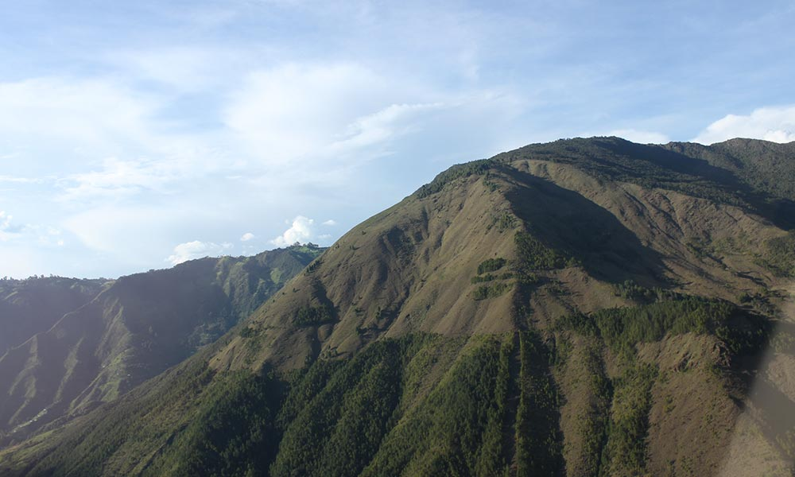

Acerca de
El Cerro Quitasol es una formación montañosa ubicada en el Valle de Aburrá, en el departamento de Antioquia, Colombia. Con una altura de 2.850 metros sobre el nivel del mar, es uno de los puntos más altos de la región y ofrece vistas panorámicas impresionantes de Medellín y sus alrededores.

Cómo llegar
Para llegar al Cerro Quitasol, puedes tomar la ruta desde Medellín hacia Bello. El cerro es visible desde varios puntos de la ciudad y cuenta con diferentes senderos para acceder a su cima. Te recomendamos visitarlo durante las primeras horas de la mañana para disfrutar de las mejores vistas y evitar las nubes que suelen formarse en la tarde.
Galería Interactiva 360°
Sumérgete en el paisaje del Cerro Quitasol. Haz clic en los botones para cambiar la vista.